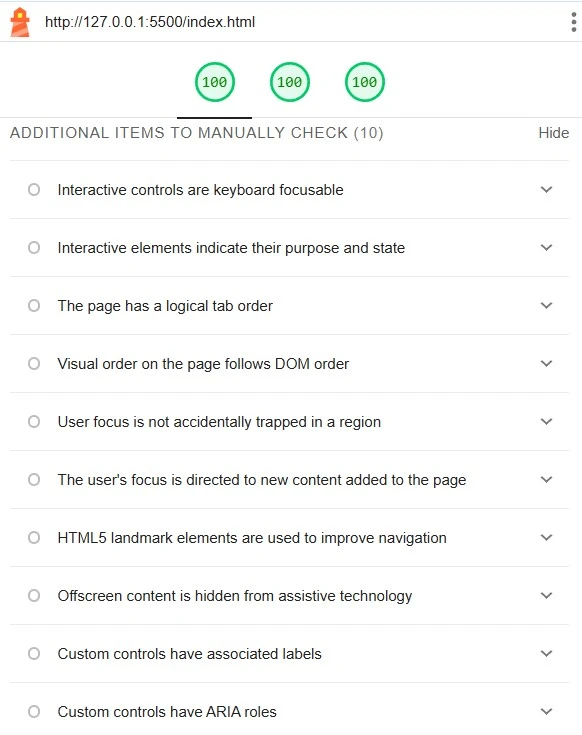

Tilgjengelighet og universiell design
Universiell utforming er en slags type utforming der alle har tilgang til nettsiden din, uansett hvem de er, hva slags sykdommer de har, hva slags apparat de bruker til å se på nettsiden din, og hva slags situasjon de er i. Det er umulig å ha perfekt universiell utforming, men man skal prøve sitt beste til å komme så nær målet som mulig.
Automatiserte tester
Lighthouse er en Google Extension som hjelper folk å finne ut av tilgjengeligheten, SEO, og "best practice". I andre ord, så lager Lighthouse automatiserte tester som hjelper deg med å forbedre brukeropplevelse på brukeren din.
Lighthouse dekker ikke alt
Lighthouse forteller oss om veldig mye, og den kommer til punktet konkret. Den har 3 hovedkatagorier som man kan få opp til 100 poeng på. Målet er vanligvis å få 100 på alle 3, men betyr det at din nettside har perfekt Tilgjenglighet? Nei, og Lighthouse inrømmer det også. Lighthouse kan ikke dekke *alt* når det kommer til tilgjengelighet og universiell design på nettsiden din, så hva slags avgjørelser skal man ta for universiell design, som Lighthouse ikke dekker?
Universiell design ikke dekket av Lighthouse på nettsiden

Først og fremst
Bilder fra Lighthouse

Vi fikk 100 av 100 på accessibility, men det betyr ikke at vår nettside fungerer på alle nettlesere, på alle folk i verden, i alle miljøer. Dette er grunnen til at automatisert tester er ikke nok.

Når det kommer til best practice, så er det ikke mye vi kan gjøre uten en automatisert test.

Samme gjelder når det kommer til SEO
For å oppsummere, så hjelper automatiserte tester, men det finnes ting de ikke dekker, som device-compatibility og generell brukertilgjengelig design. Dette trenger man å teste manuelt.